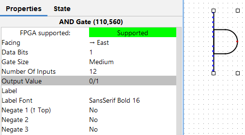
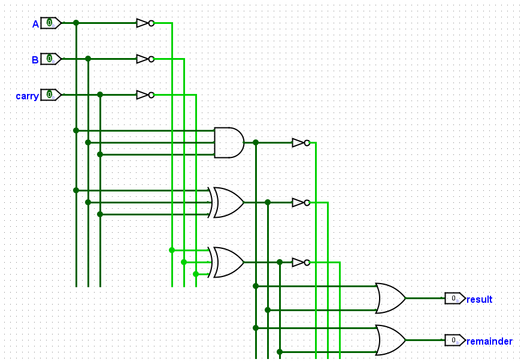
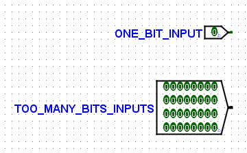
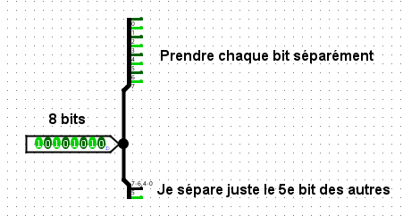
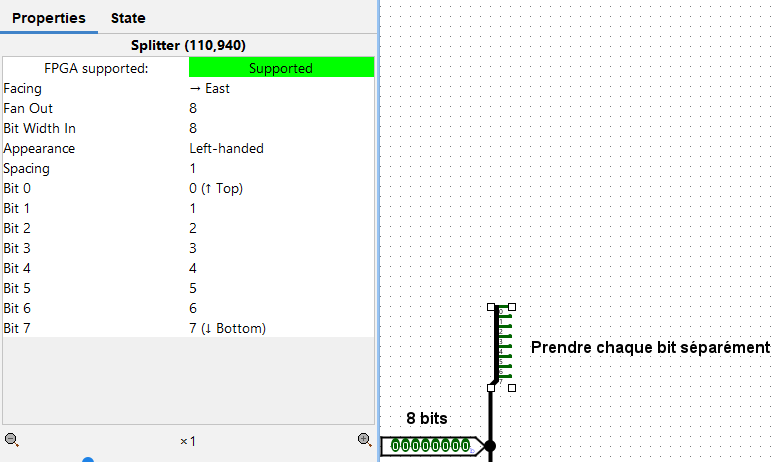
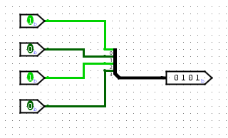
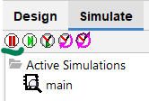
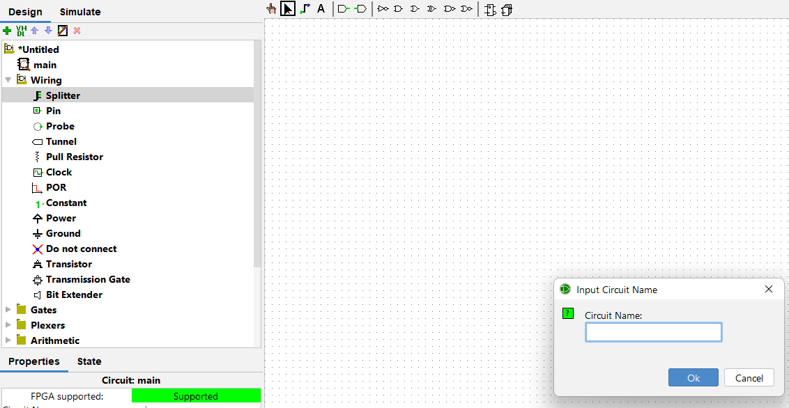

Tips Logisim
Entrées multiples
Dans la catégorie des tips "mais comment j'ai fait avant de savoir ça?", savais-tu que tu peux avoir une porte AND avec 4 inputs? Et elle donne vrai seulement quand les 4 inputs sont vrais? Au lieu de faire 3 portes AND?
Si tu savais déjà, tant mieux, mais maintenant tu le sais!
Il te suffit pour cela de sélectionner une porte (clique dessus et ce sera sélectionné normalement), puis de regarder ses propriétés en bas à gauche :
Modifie la propriété "Number of inputs" selon ta volonté (ci-dessus, c'est de l'abus, mais ça marche).
De manière générale, regarde dans les propriétés des objets, tu verras y a plein de possibilités, pas seulement ça!
Organiser ses câbles
Tes câbles sont sens dessus-dessous? Ça devient vite un chenis pas possible, et les sous-circuits sont une solutions à ça (voir plus bas), mais avant cette solution tu peux simplement ranger un peu tes câbles.
Comment? En regardant les corrigés, j'ai découvert cette technique assez intéressante des "bus" de câbles. En gros, tous tes câbles sont sur une autoroute, et tu tires un câble secondaire depuis cette autoroute quand tu en as besoin. C'est plus simple à faire et à lire!
Franchement, il est pas clean ce circuit?
Le splitter, notre sauveur
Dans les circuits du TP, tu devras travailler avec des inputs de plus de 1 bit (tu peux faire ça dans les propriétés de ton input) :
Comment travailler avec ces inputs? Pour des portes simples comme AND, etc, tu peux modifier la taille des inputs de la porte dans ses propriétés (attention au comportement de la porte à ce moment), mais parfois on veut des opérations plus complexes. Comment?
La réponse est simple : on utilise les splitters. Comme leur nom l'indique, les splitters séparent les bits de l'input de la manière désirée :
Note qu'on peut séparer comme on veut. Je peux prendre les bits 0-3 dans un output et les 4-7 dans un deuxième, ou prendre les bits 3 et 5 dans un output et le reste dans l'autre. Je peux avoir 3 outputs, tout est possible.
Comment gérer ça? Dans les propriétés!! Eh oui! Examinons les différentes propriétés du splitter :
| Nom | Description |
|---|---|
| Facing | Cosmétique, peut aussi être utile pour placer tes fils de façon optimale. Il est assez intuitif, il indique où vont pointer les petits fils du splitter. |
| Fan Out | Indique combien de petits fils partent du splitter. Les fils "non-utilisés" seront grisés mais existeront. Cet attribut n'indique pas la répartition des bits sur les fils, ça c'est plus loin. |
| Bit Width In | Indique la taille de l'input, c'est à dire du côté "gros inputs", combien de bits le splitter va recevoir. Dans l'exemple, notre input est de 8bits, donc c'est 8. |
| Appearance | Cosémtique, peut être utile encore une fois pour organiser ses fils et garder son circuit lisible, difficile de décrire son effet mais teste, ça change juste l'orientation du splitter. |
| Spacing | À combien de "petits points" de la grille Logisim les inputs seront les uns des autres. Par défaut, la valeur est 1, c'est à dire qu'il n'y a pas d'espace entre les fils. Mais tu peux vouloir un ou deux points d'espace. |
| Bit i | Indique dans quel fil sortira le ième bit. C'est là que tu choisis vraiment quels bits tu veux extraire et comment. |
De même qu'il est possible de séparer un input en plusieurs outputs, il est possible de rassembler plusieurs inputs en un output, toujours avec le splitter, juste dans l'autre sens (rien à changer dans les propriétés) :
Générer automatiquement des circuits
Je vais pas refaire la docu ici, juste dire que nous disposons d'une vidéo expliquant comment, à partir d'une truth table ou d'une expression logique, créer un circuit automatiquement grâce à Logisim
Accéder à la vidéo (il faut que tu sois connecté(e))
Activer/Désactiver les clocks
Voir des clocks clignoter pendant que tu travailles peut être une source de déconcentration (c'est pas un problème de riche ok?), heureusement tu peux mettre la simulation en pause pour les arrêter temporairement :
Inversément, si ta clock ne fonctionne pas, c'est sûrement que ta simulation est en pause
Créer un sous-circuit
Le DSD, c'est un peu comme la prog. Quand ton code devient trop long ou que tu refais la même chose plusieurs fois, tu divises le code en différentes fonctions plus petites que tu utilises peut-être plusieurs fois, pour éviter le code redondant.
En DSD, c'est pareil, pour simplifier ton circuit, tu vas créer des parties de circuit que tu peux réutiliser partout dans ton circuit.
Pour ce faire, rends-toi dans l'onglet Design et clique sur l'icône de +, puis donne un nom à ton nouveau circuit.
Ton nouveau circuit apparaîtra dans l'onglet Design, tu pourras l'utiliser depuis ici comme n'importe quel autre composant
Modifier des (sous-)circuits
Une fois tes sous-circuits créés, pour switcher entre eux, rien de plus simple! Il te suffit de double-cliquer sur le nom du circuit que tu veux ouvrir dans l'onglet Design. Le circuit s'ouvrira.
![[Il devrait y avoir une image ici...]](../resources/images/open-circuit.png)
Une petite loupe (voir ci-dessus) apparaît sur le circuit actuellement ouvert
Attention! Clique bien sur le nom et pas sur l'espace blanc à côté, sinon le circuit ne s'ouvrira pas (choix des développeurs, je sais pas c'est comme ça)